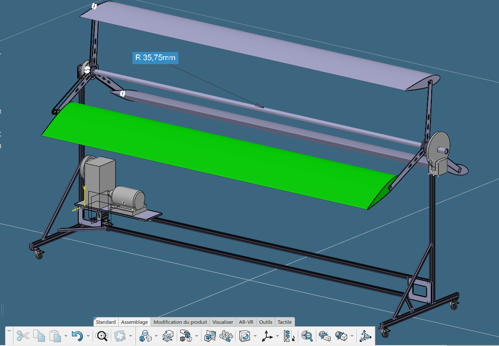
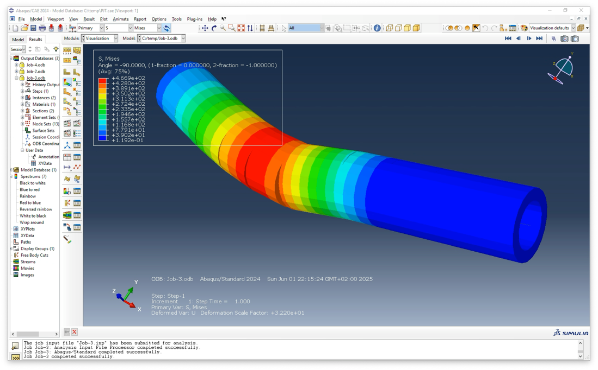

Design point
For a swept area of 9.9 m² and a 13 m·s⁻¹ wind speed, the available wind power is 14.14 kW. Applying a 0.40 power coefficient gives 5.66 kW at the rotor. A 4.6 kW generator target therefore implies an 81.3% downstream mechanical-to-electrical efficiency budget.
Transmission and verification
A 1.13 belt stage followed by spur gear stages with an overall ratio of 13.984 produces the required speed increase. Calculated tangential tooth loads reached 3.37 kN and 1.38 kN at the principal stages. Bearing life estimates ranged from 408 to 5,713 million revolutions across the selected positions, supporting the 62,400-hour design mission when installed under the assumed operating loads.
Finite-element checks located stress concentrations of 466.9 MPa, 116.5 MPa and 16.1 MPa across the critical components. The input shaft did not satisfy the preliminary verification, turning the analysis into a practical design-audit result: this member needs a larger section or revised geometry before release.


Engineering conclusion
The work closes the loop between aerodynamic power, speed conversion and mechanical reliability. Housing interfaces, interference fits, lubrication, braking and yaw constraints were integrated alongside the numerical checks so that the drivetrain remains a buildable system rather than a ratio on paper.
Read scientific report ↗